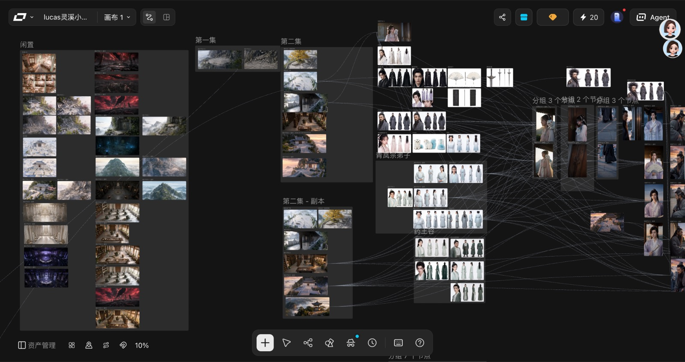
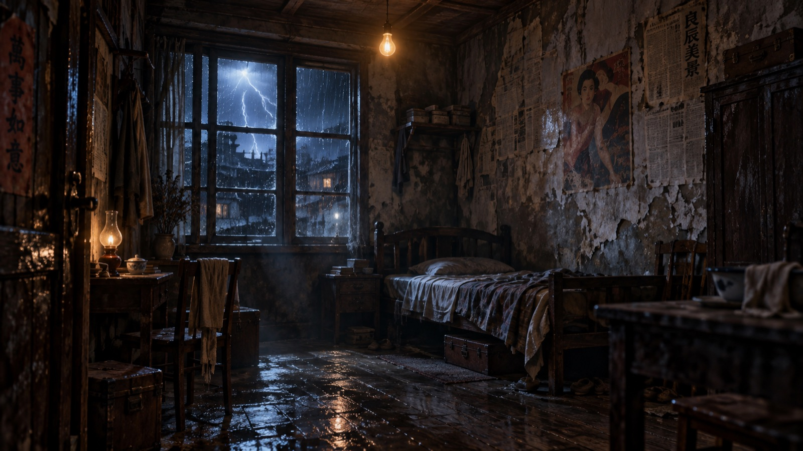
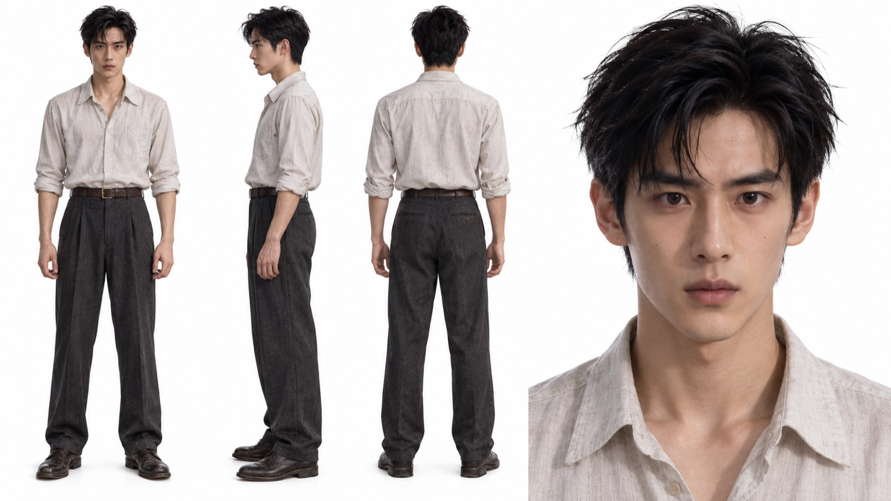
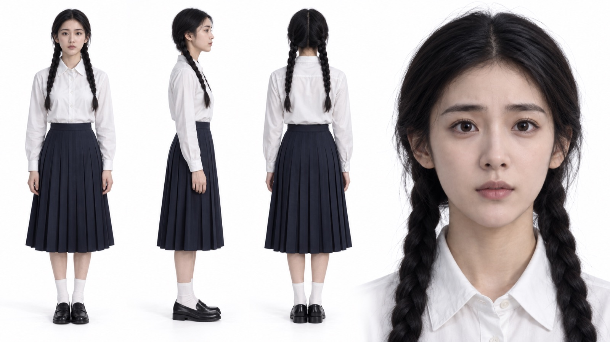
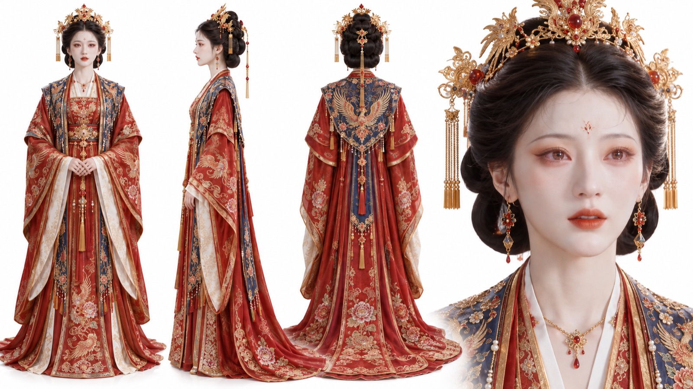
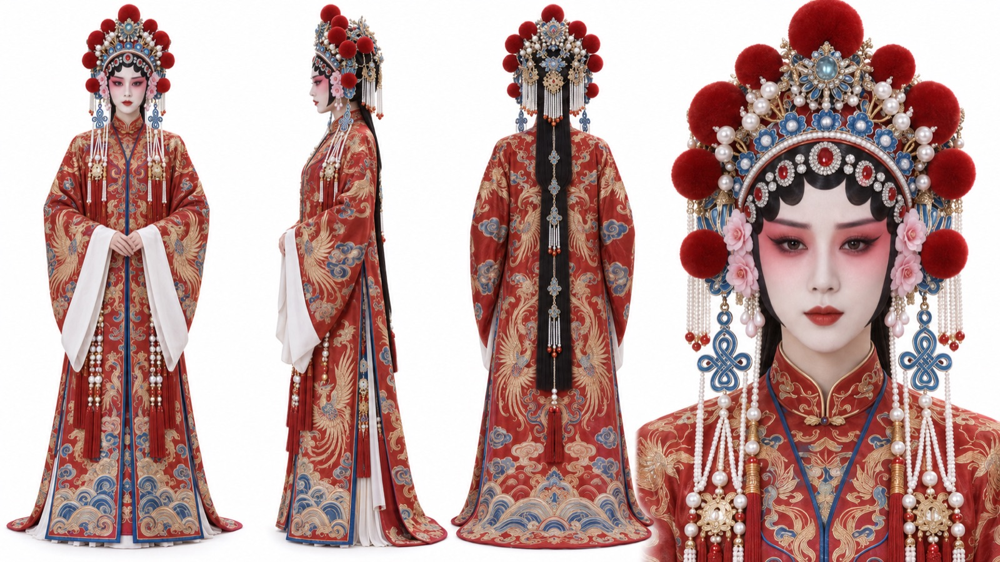
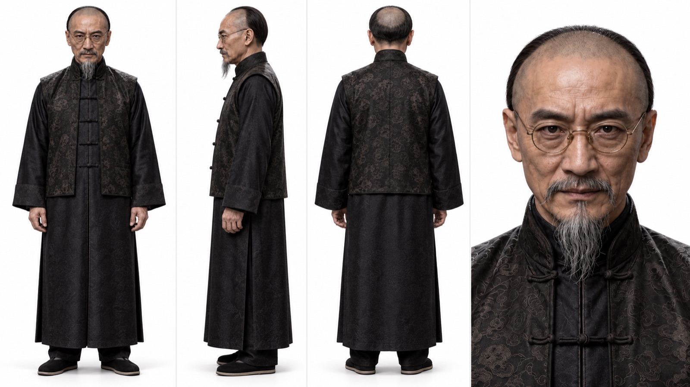
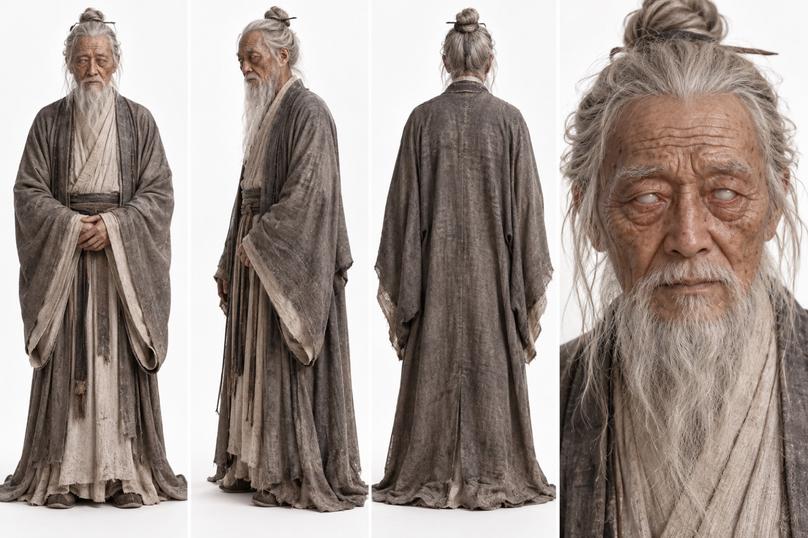
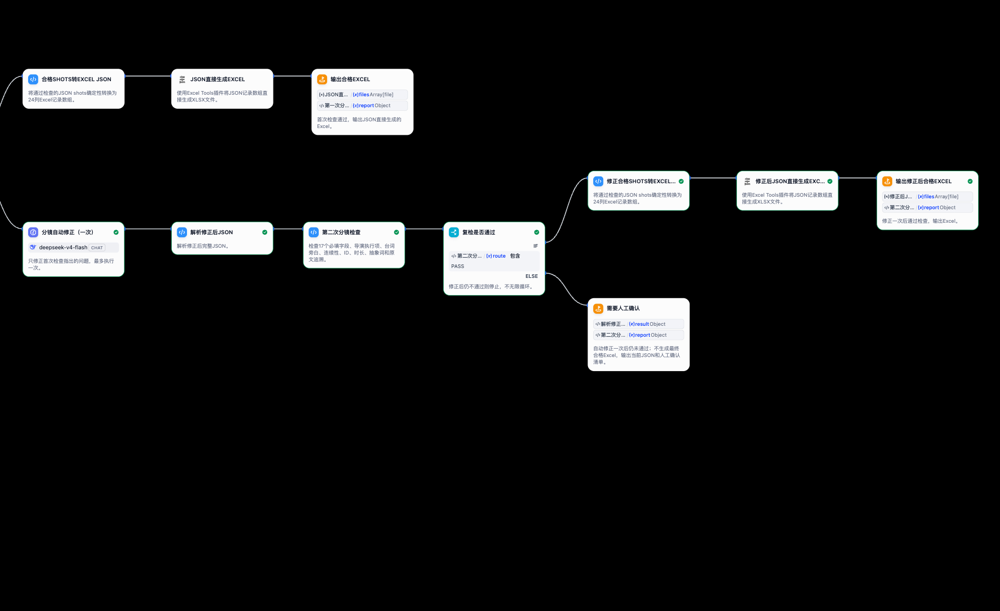

Dynamic consistency
Maintaining continuity of character movement, performance, and action across shots.
2027 PhD Applicant · Animation · Generative AI
I study how creators make judgments, manage uncertainty, repair failures, and maintain authorship across iterative generative-AI video and animation workflows.
01 · About
I hold a Master's degree in Design with a specialization in Animation. Since 2026, my professional practice has focused on generative-AI-assisted animation, micro-drama production, visual storytelling, workflow design, and AI education.
I have participated in five AI-assisted serial audiovisual projects involving approximately 200 episodes, working across script decomposition, character and scene design, storyboarding, image/video generation, editing, production coordination, and quality review.
These experiences led me to a research problem that repeatedly appears in real production: AI can generate quickly, but creators still need to decide what is usable, what should be rejected, when a model has failed, and how creative intention can be preserved across uncertain outputs.
02 · Practice
Selected world-building materials from an AI-assisted serial micro-drama project, with commercially sensitive information omitted.

Generative AI expands the space of visual possibilities, but it also increases the amount of human evaluation, coordination, rejection, and revision required.
Environment exploration
A coherent visual world developed across historical urban spaces, intimate interiors, and supernatural settings.
Character continuity and costume transformation
Multi-view reference sheets used to stabilize identity across protagonists, supporting roles, periods, and costume states.





03 · Research Focus
With stronger models, generation itself is becoming easier. The harder problem is whether an output is usable, coherent, controllable, and consistent with creative intention.
Maintaining continuity of character movement, performance, and action across shots.
Keeping camera movement, spatial logic, shot rhythm, and visual language consistent.
Different video models have different strengths, failure modes, and visual tendencies.
A visually attractive output can still move away from the intended narrative or aesthetic direction.
What creators actually do when AI fails
Emerging research proposition
Generative AI adds evaluative, orchestration, repair, and uncertainty-management work to the creator's role.
04 · Workflow Prototype
A structured workflow prototype designed to keep final decision authority with the human creator when automated revision remains uncertain.

05 · Education & Observation
Alongside production, I have developed more than ten AI-related courses and trained over one hundred learners in AI-assisted creative production.
Beginners often struggle less with “how to generate” than with interpreting unpredictable results, deciding when to regenerate, and knowing which decisions should remain human.
06 · From Practice to Research
Proposed direction
How do professional creators identify and manage uncertainty in iterative generative-AI audiovisual workflows?
What considerations shape decisions to accept, regenerate, revise, repair, switch models, or abandon an output?
How does creative control shift from direct execution toward iterative evaluation, orchestration, and repair?
How do creators understand authorship when core intention remains human but substantial execution is delegated to AI?
Potential research approach
07 · Contact
Master of Design (Animation)
2027 PhD Applicant
Research interests
Generative AI · Creative Labor · Creative Agency · Authorship · Human-AI Collaboration · Audiovisual Production liangtingwang123@gmail.com